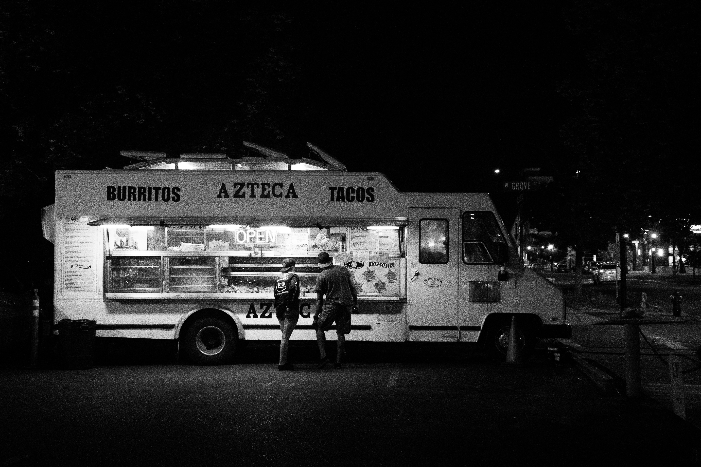

AZTECA

Azteca is a one of a kind “Mexican Flavor” food truck in Santa Cruz, CA.
Here, you’re getting all your favorites and popular mexican foods, utilizing the
perfect combinations of spices, ingredients and portions. The result? An experience
you’ll want to partake in time and time again.
We love making our customers happy by serving them our tasty and fresh Mexican food!
High-quality ingredients and spices mixed with excellent service is the best recipe
for a successful food truck. We always take pride in the freshness of our cooking.
Our tacos are always served on a warm, fresh corn tortilla and our entire menu features
delicious authentic Mexican food. We also offer catering for special and private events,
whether you need us to provide catering for a family special event, or even a corporate
party, we are here to bring the flavor to the table. So why wait? Come and find Azteca
in any of our 2 locations here in Santa Cruz, CA., or contact us to cater your next event.
Either way, this is a must try on our list.
BEACH DOGS

Beach Dogs always makes it a fun experience. Everyone loves the popular bright yellow and turquoize hot dog truck we serve from. We offer a variety of choices of gourmet hot dogs ranging from our Bacon Ranch Dog to our Western Dog to our classic California Deluxe Dog with sliced tomato, onion & shredded cheese. Our Aloha Dog is a HUGE juicy Kielbasa dog topped with an island mango salsa. We offer a Pulled Pork Sandwich topped with our delicious kale slaw. We also have Hot Links & Polish Dogs. All of our dogs are big 1/4 lb. All Beef Dogs & are served on soft warm sesame seed hoagie roll bread. We are proud to offer superb service and a great menu that has something for everyone to enjoy, including vegetarian and vegan options upon request.
DANKY DONUTS

It’s a donut party every day! From our signature 18-hour brioche
dough, to our beautiful buttermilk old-fashioneds, to our voluptuous
vegan cake donuts, to our delectable donut bites - every flavor is
specially crafted to take your tastebuds to the disco.
Our fans, friends, team members, and partners are culinary risk-takers,
and they’re champions for quality! We believe that donuts bring people
together and that together, we’re better. No hate, no drama, only donuts!
We have a unique passion for quality that is our reason for being.
We create partnerships with purpose and are forever thoughtful about
the quality of ingredients we use. We take pride in the full experience,
and we own it! Our mission is for you to walk into a beautiful space where
all your cares melt away and are met with stellar hospitality and the
best donut you’ve ever tasted.
SCRUMPTIOUS FISH & CHIPS

Our Story starts from across the pond. Owners Helen and Tim have lived
in the States for quite some time now, but once called a village named
Dedham home. Over the years many things have changed except their craving
for authentic fresh fish and chips. With the opening of Scrumptious Fish & Chips,
the Korinth's have set out to introduce the original European fish & chip to the
California food scene.
At Scrumptious, we dive into the heart of European culinary tradition
while embracing the soul of California food culture. Think of our fish
& chips as a deliciously mindful fusion between European gastronomy and
the West Coast’s renowned farm-to-table fare. Authenticity matters to
us. So does the journey in which your ingredients travel in order to
land on your plate!